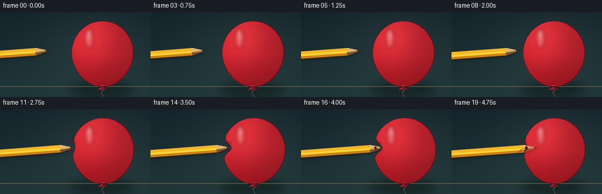
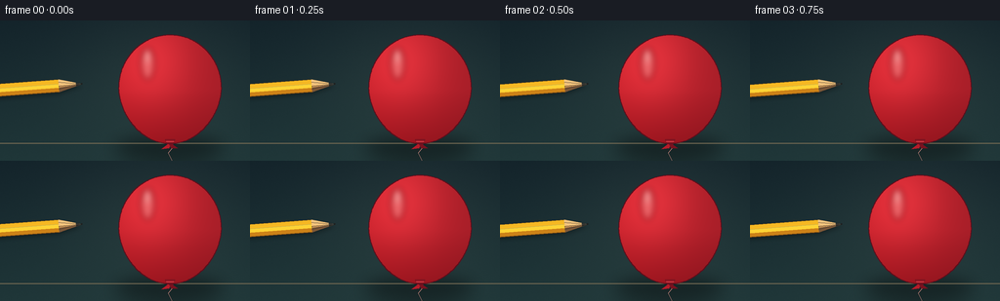
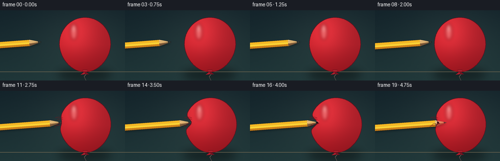

CODING AGENTS AS PIXEL WORLD MODELS
traex/GPT-5.6-Sol · phygen_025
点击播放 · 原生 RGB 像素
逐轮保存的候选
回放视频、检查图与代码变化。
每份候选均可单独播放。实际图片检查记录在下方工具轨迹中。
候选 01播放与检查图
点击播放 · 原生 RGB 像素


展开代码变化
--- 上一保存版本
+++ 本次保存版本
@@ -0,0 +1,263 @@
+from pathlib import Path
+
+import numpy as np
+from PIL import Image, ImageDraw, ImageFilter
+
+import artifact_io
+
+
+# Rendering at 3x resolution gives smooth curves without relying on any image assets.
+S = 3
+W, H = 256, 144
+SW, SH = W * S, H * S
+
+
+def sc(v):
+ return int(round(v * S))
+
+
+def pts_scaled(points):
+ return [(sc(x), sc(y)) for x, y in points]
+
+
+def smoothstep(x):
+ x = np.clip(x, 0.0, 1.0)
+ return x * x * (3.0 - 2.0 * x)
+
+
+def background():
+ yy, xx = np.mgrid[0:SH, 0:SW]
+ y = yy / S
+ x = xx / S
+ # Cool, subdued studio backdrop; a warm pool of light is aimed at the subject.
+ top = np.array([19.0, 35.0, 42.0])
+ bottom = np.array([31.0, 54.0, 56.0])
+ mix = (y / H)[..., None]
+ rgb = top * (1.0 - mix) + bottom * mix
+ glow = np.exp(-(((x - 164.0) / 105.0) ** 2 + ((y - 57.0) / 85.0) ** 2))
+ rgb += glow[..., None] * np.array([12.0, 13.0, 10.0])
+ # A faint fixed grain keeps the large background gradient from looking synthetic.
+ rng = np.random.default_rng(25)
+ rgb += rng.normal(0.0, 0.7, (SH, SW, 1))
+ return Image.fromarray(np.uint8(np.clip(rgb, 0, 255)), "RGB").convert("RGBA")
+
+
+BG = background()
+
+
+def balloon_geometry(dent, rebound, wobble):
+ cx = 174.0 + 0.10 * dent + wobble
+ cy = 70.5
+ rx = 52.5 + 0.045 * dent
+ ry = 55.8 + 0.025 * dent
+ contact_y = 65.0
+ points = []
+ for theta in np.linspace(0, 2 * np.pi, 361, endpoint=False):
+ co, si = np.cos(theta), np.sin(theta)
+ # A slightly pear-shaped latex balloon rather than a perfect ellipse.
+ taper = 1.0 - 0.065 * max(si, 0.0) + 0.018 * max(-si, 0.0)
+ x = cx + rx * co * taper
+ y = cy + ry * si
+ if co < 0:
+ locality = np.exp(-((y - contact_y) / 11.0) ** 2) * (-co) ** 4
+ x += dent * locality
+ # Once pierced, the broad indentation relaxes but a narrow lip remains.
+ if rebound > 0 and co < 0:
+ x += 1.4 * rebound * np.exp(-((y - contact_y) / 3.6) ** 2) * (-co) ** 7
+ points.append((x, y))
+ return points, (cx, cy), contact_y
+
+
+def balloon_layer(points, center, frame_index):
+ mask = Image.new("L", (SW, SH), 0)
+ ImageDraw.Draw(mask).polygon(pts_scaled(points), fill=255)
+
+ yy, xx = np.mgrid[0:SH, 0:SW]
+ x, y = xx / S, yy / S
+ cx, cy = center
+ # Rich red latex, illuminated from upper left.
+ light = np.exp(-(((x - (cx - 20)) / 43) ** 2 + ((y - (cy - 28)) / 48) ** 2))
+ lower = np.clip((y - cy) / 60.0, 0, 1)
+ side = np.clip((x - cx) / 70.0, -1, 1)
+ base = np.empty((SH, SW, 4), dtype=np.uint8)
+ base[..., 0] = np.clip(177 + 47 * light - 27 * lower - 14 * side, 0, 255)
+ base[..., 1] = np.clip(30 + 20 * light - 9 * lower, 0, 255)
+ base[..., 2] = np.clip(40 + 20 * light - 10 * lower, 0, 255)
+ base[..., 3] = np.asarray(mask)
+ layer = Image.fromarray(base, "RGBA")
+
+ # Broad and pin-point reflections establish the taut, glossy surface.
+ shine = Image.new("RGBA", (SW, SH), (0, 0, 0, 0))
+ d = ImageDraw.Draw(shine)
+ d.ellipse((sc(cx - 30), sc(cy - 43), sc(cx - 16), sc(cy - 10)), fill=(255, 225, 213, 75))
+ d.ellipse((sc(cx - 26), sc(cy - 39), sc(cx - 21), sc(cy - 27)), fill=(255, 247, 236, 148))
+ shine = shine.filter(ImageFilter.GaussianBlur(sc(3.2)))
+ shine.putalpha(Image.composite(shine.getchannel("A"), Image.new("L", (SW, SH), 0), mask))
+ layer = Image.alpha_composite(layer, shine)
+ return layer, mask
+
+
+def draw_string_and_shadow(canvas, center, dent):
+ # Contact shadow on the tabletop and the balloon's thin dangling string.
+ shadow = Image.new("RGBA", canvas.size, (0, 0, 0, 0))
+ ds = ImageDraw.Draw(shadow)
+ ds.ellipse((sc(117), sc(119), sc(229 + 0.08 * dent), sc(143)), fill=(0, 0, 0, 105))
+ shadow = shadow.filter(ImageFilter.GaussianBlur(sc(8)))
+ canvas.alpha_composite(shadow)
+
+ d = ImageDraw.Draw(canvas)
+ # Table edge is intentionally subtle.
+ d.line([(0, sc(126)), (SW, sc(126))], fill=(113, 104, 82, 42), width=sc(1))
+ x = center[0]
+ string = [(x, 124), (x + 3, 130), (x - 2, 136), (x + 2, 144)]
+ d.line(pts_scaled(string), fill=(174, 120, 113, 185), width=sc(0.65))
+
+
+def draw_tie(canvas, center):
+ x = center[0]
+ d = ImageDraw.Draw(canvas)
+ # Rolled neck and tied triangular flaps.
+ d.polygon(pts_scaled([(x - 5, 122), (x + 5, 122), (x + 2.8, 128), (x - 2.5, 128)]),
+ fill=(139, 22, 35, 255), outline=(91, 18, 29, 255))
+ d.polygon(pts_scaled([(x - 1, 126), (x - 9, 132), (x - 1, 131), (x + 1, 127)]),
+ fill=(181, 28, 42, 255))
+ d.polygon(pts_scaled([(x + 1, 126), (x + 8, 131), (x + 1, 131), (x - 1, 127)]),
+ fill=(119, 18, 31, 255))
+ d.line(pts_scaled([(x - 4, 124), (x + 4, 124)]), fill=(241, 79, 83, 150), width=sc(0.7))
+
+
+def draw_pencil(canvas, tip_x, tip_y=65.0):
+ # Pencil axis rises very slightly toward the sharpened end.
+ dvec = np.array([0.997, -0.075])
+ nvec = np.array([0.075, 0.997])
+ tip = np.array([tip_x, tip_y])
+ cone_base = tip - dvec * 24.0
+ shaft_left = np.array([-17.0, tip_y + (tip_x + 17) * 0.075])
+ half = 6.5
+
+ def p(v):
+ return (sc(v[0]), sc(v[1]))
+
+ layer = Image.new("RGBA", canvas.size, (0, 0, 0, 0))
+ dr = ImageDraw.Draw(layer)
+ # Soft pencil shadow, offset below the actual pencil.
+ sh = Image.new("RGBA", canvas.size, (0, 0, 0, 0))
+ sd = ImageDraw.Draw(sh)
+ sd.polygon([p(shaft_left + nvec * (half + 2.2)), p(cone_base + nvec * (half + 2.2)),
+ p(tip + nvec * 2.2), p(cone_base - nvec * (half - 2.2)),
+ p(shaft_left - nvec * (half - 2.2))], fill=(0, 0, 0, 85))
+ sh = sh.filter(ImageFilter.GaussianBlur(sc(2.3)))
+ canvas.alpha_composite(sh)
+
+ # Hexagonal yellow lacquer body, split into lit facets.
+ dr.polygon([p(shaft_left - nvec * half), p(cone_base - nvec * half), p(cone_base - nvec * 1.8),
+ p(shaft_left - nvec * 1.8)], fill=(246, 184, 35, 255))
+ dr.polygon([p(shaft_left - nvec * 1.8), p(cone_base - nvec * 1.8), p(cone_base + nvec * 2.2),
+ p(shaft_left + nvec * 2.2)], fill=(255, 211, 52, 255))
+ dr.polygon([p(shaft_left + nvec * 2.2), p(cone_base + nvec * 2.2), p(cone_base + nvec * half),
+ p(shaft_left + nvec * half)], fill=(205, 130, 24, 255))
+ dr.line([p(shaft_left - nvec * half), p(cone_base - nvec * half)], fill=(117, 75, 23, 230), width=sc(0.8))
+ dr.line([p(shaft_left + nvec * half), p(cone_base + nvec * half)], fill=(95, 56, 18, 230), width=sc(1.0))
+ dr.line([p(shaft_left - nvec * 1.8), p(cone_base - nvec * 1.8)], fill=(255, 232, 108, 180), width=sc(0.65))
+
+ # Exposed cedar cone with two shaded cutting faces.
+ dr.polygon([p(cone_base - nvec * half), p(tip), p(cone_base + nvec * half)],
+ fill=(221, 165, 97, 255), outline=(101, 65, 39, 255))
+ dr.polygon([p(cone_base - nvec * half), p(tip), p(cone_base - nvec * 0.3)],
+ fill=(244, 196, 125, 255))
+ dr.polygon([p(cone_base + nvec * 2.0), p(tip), p(cone_base + nvec * half)],
+ fill=(166, 109, 64, 180))
+ # Fine wood grain converging toward the point.
+ for off, alpha in [(-3.6, 95), (0.7, 75), (3.6, 80)]:
+ start = cone_base + nvec * off
+ end = tip - dvec * 5.0 + nvec * (off * 0.17)
+ dr.line([p(start), p(end)], fill=(126, 74, 42, alpha), width=sc(0.45))
+ # Long, unmistakable graphite point.
+ graphite_base = tip - dvec * 6.2
+ dr.polygon([p(graphite_base - nvec * 1.7), p(tip), p(graphite_base + nvec * 1.7)],
+ fill=(38, 39, 38, 255))
+ dr.line([p(graphite_base - nvec * 0.8), p(tip)], fill=(103, 105, 98, 220), width=sc(0.55))
+ canvas.alpha_composite(layer)
+
+
+def draw_surface_details(canvas, points, center, contact_y, dent, pierced, tip_x):
+ d = ImageDraw.Draw(canvas)
+ # Dark red silhouette line, especially useful where the red balloon meets the pencil.
+ d.line(pts_scaled(points + [points[0]]), fill=(91, 15, 28, 220), width=sc(1.05), joint="curve")
+
+ if dent > 1.0:
+ # Curved tension marks radiate from the point of loading.
+ amount = min(dent / 17.0, 1.0)
+ bx = 121.5 + dent * 0.88
+ col = (115, 17, 29, int(65 + 70 * amount))
+ for dy, length in [(-8.0, 13), (-4.7, 9), (5.0, 9), (8.5, 13)]:
+ d.arc((sc(bx - length), sc(contact_y + dy - 3.2), sc(bx + 4), sc(contact_y + dy + 3.2)),
+ 205 if dy < 0 else 150, 334 if dy < 0 else 280, fill=col, width=sc(0.65))
+
+ if pierced:
+ # The continuous contour is covered by the pencil; two bright rolled latex lips
+ # and a tiny dark slit make the actual penetration readable at this resolution.
+ hole_x = 126.0 + 0.10 * (tip_x - 139)
+ d.line(pts_scaled([(hole_x - 1.2, contact_y - 3.1), (hole_x + 1.4, contact_y - 1.8),
+ (hole_x + 3.7, contact_y - 1.4)]),
+ fill=(255, 118, 119, 245), width=sc(1.15))
+ d.line(pts_scaled([(hole_x - 1.0, contact_y + 3.0), (hole_x + 1.6, contact_y + 1.9),
+ (hole_x + 3.6, contact_y + 1.5)]),
+ fill=(102, 10, 23, 245), width=sc(1.3))
+ d.ellipse((sc(hole_x - 1.7), sc(contact_y - 1.8), sc(hole_x + 1.7), sc(contact_y + 1.8)),
+ fill=(49, 10, 18, 205))
+
+
+def render_frame(i):
+ canvas = BG.copy()
+
+ # Deliberately non-uniform approach: a calm approach, compression, then puncture.
+ tip_positions = [84, 87, 90, 94, 98, 102, 107, 112, 116, 120,
+ 123, 126, 130, 133, 136, 139, 141, 143, 145, 147]
+ tip_x = float(tip_positions[i])
+ if tip_x <= 120:
+ dent = 0.0
+ elif tip_x <= 139:
+ dent = (tip_x - 120.0) * 0.94
+ else:
+ # Rapid local relaxation after the graphite breaches the stretched skin.
+ dent = np.interp(tip_x, [139, 147], [17.9, 4.8])
+ pierced = tip_x > 139.2
+ rebound = 0.0 if not pierced else smoothstep((tip_x - 139.0) / 8.0) * 1.7
+ wobble = 0.0 if not pierced else 0.45 * np.sin((i - 15) * 1.5) * (1 - (i - 15) / 8)
+
+ points, center, contact_y = balloon_geometry(dent, rebound, wobble)
+ draw_string_and_shadow(canvas, center, dent)
+ balloon, mask = balloon_layer(points, center, i)
+ canvas.alpha_composite(balloon)
+ draw_tie(canvas, center)
+
+ # The pencil is drawn between opaque latex and a faint front-surface glaze. Thus its
+ # embedded tip remains visible, but turns red and dim once it has passed the skin.
+ draw_pencil(canvas, tip_x, contact_y)
+ if tip_x > 120:
+ glaze_alpha = 58 if not pierced else 82
+ glaze = balloon.copy()
+ glaze.putalpha(Image.fromarray((np.asarray(mask, dtype=np.uint16) * glaze_alpha // 255).astype(np.uint8)))
+ canvas.alpha_composite(glaze)
+
+ draw_surface_details(canvas, points, center, contact_y, dent, pierced, tip_x)
+
+ # Pencil must sit in front of the unbroken boundary during approach. Redraw only the
+ # last graphite millimetres to avoid a contour line falsely crossing the sharp tip.
+ if not pierced and tip_x <= 120.5:
+ d = ImageDraw.Draw(canvas)
+ d.ellipse((sc(tip_x - 1.25), sc(contact_y - 0.9), sc(tip_x + 0.25), sc(contact_y + 0.65)),
+ fill=(31, 32, 31, 255))
+
+ frame = canvas.convert("RGB").resize((W, H), Image.Resampling.LANCZOS)
+ return np.asarray(frame, dtype=np.uint8)
+
+
+def main():
+ frames = np.stack([render_frame(i) for i in range(20)], axis=0)
+ artifact_io.save(frames, Path(__file__).resolve().parent)
+
+
+if __name__ == "__main__":
+ main()
候选 02播放与检查图
点击播放 · 原生 RGB 像素

展开代码变化
--- 上一保存版本
+++ 本次保存版本
@@ -197,7 +197,9 @@
if pierced:
# The continuous contour is covered by the pencil; two bright rolled latex lips
# and a tiny dark slit make the actual penetration readable at this resolution.
- hole_x = 126.0 + 0.10 * (tip_x - 139)
+ # Locate the relaxed outer skin itself; the hole travels left along the
+ # stationary pencil as tension around the puncture is released.
+ hole_x = min(x for x, y in points if abs(y - contact_y) < 0.55)
d.line(pts_scaled([(hole_x - 1.2, contact_y - 3.1), (hole_x + 1.4, contact_y - 1.8),
(hole_x + 3.7, contact_y - 1.4)]),
fill=(255, 118, 119, 245), width=sc(1.15))
@@ -218,7 +220,9 @@
if tip_x <= 120:
dent = 0.0
elif tip_x <= 139:
- dent = (tip_x - 120.0) * 0.94
+ # Match the moving pencil tip to the indented contour (whose centre and
+ # radius also change very slightly under compression).
+ dent = max(0.0, (tip_x - 121.5) / 1.055)
else:
# Rapid local relaxation after the graphite breaches the stretched skin.
dent = np.interp(tip_x, [139, 147], [17.9, 4.8])
可观测工具轨迹
实际执行的命令与返回图片。
命令 1exit 0
/bin/bash -lc "cat prompt.txt && printf '\\n---RULES---\\n' && cat GENERATION_RULES.md && printf '\\n---SPEC---\\n' && cat task_spec.json"
命令 2exit 0
/bin/bash -lc "find . -maxdepth 2 -type f -printf '%p\\n' | sort && printf '\\nTOOLS\\n' && command -v ffmpeg || true && command -v blender || true && command -v python3 || true"
命令 3exit 0
/bin/bash -lc 'cat artifact_io.py'
命令 4exit 0
/bin/bash -lc "python3 generate.py && ls -lh pixels.npz inspection.png index.html && python3 - <<'PY'
from PIL import Image
im=Image.open('inspection.png'); print(im.size)
PY"命令 5exit 0
/bin/bash -lc "python3 generate.py >/dev/null && python3 - <<'PY'
import numpy as np, json
z=np.load('pixels.npz')['pixels']
print(z.shape,z.dtype, 'unique',len(np.unique(z)), 'delta_pixels',[int(np.count_nonzero(z[:,:,i]"'!=z[:,:,i-1])) for i in range(1,20)])
from PIL import Image
# make a close-up strip of key contact frames for local verification
imgs=[Image.open(f'"'frames/{i:02d}.png').crop((70,40,165,91)).resize((380,204)) for i in [8,11,13,15,16,17,19]]
out=Image.new('RGB',(380*len(imgs),204));
for j,im in enumerate(imgs): out.paste(im,(380*j,0))
out.save('contact_check.png')
PY
ls -lh frames/00.png frames/19.png contact_check.png"保存候选 2 份；完成命令 5 次；可验证图片返回 0 张。原始 API 响应与完整日志保留在本地。